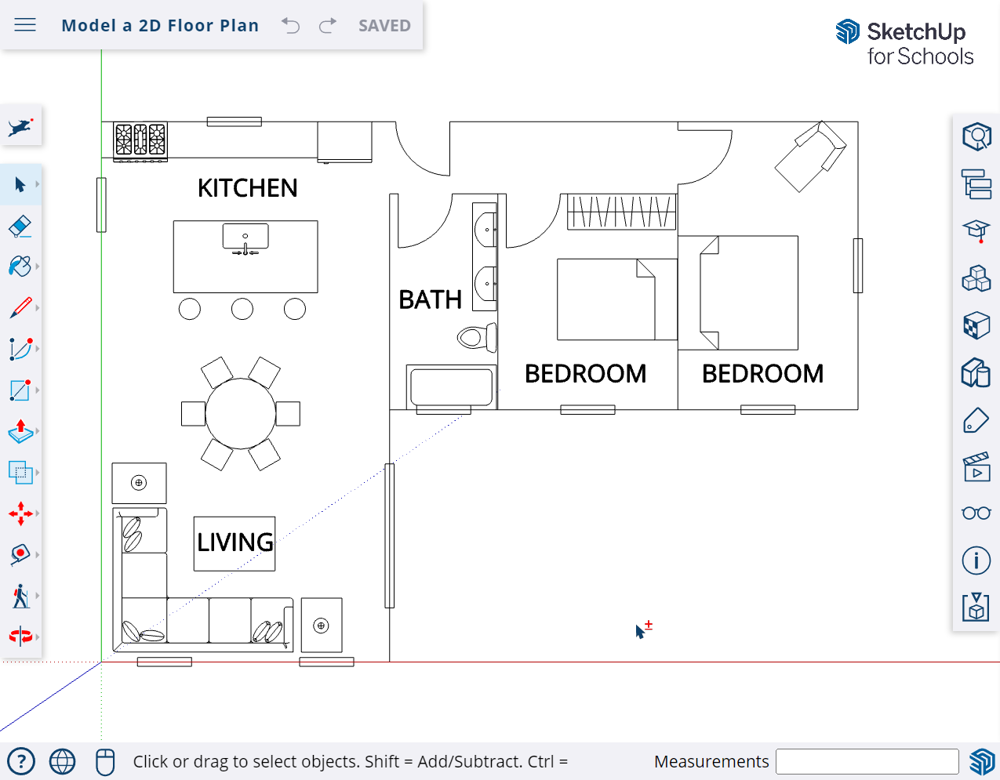
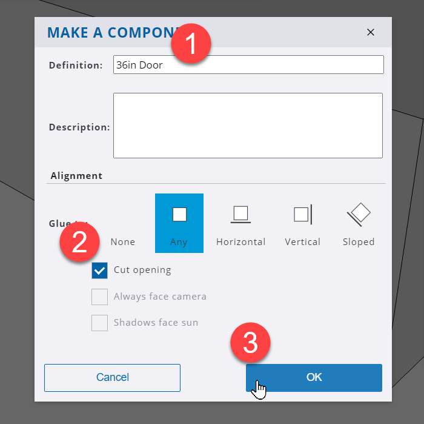
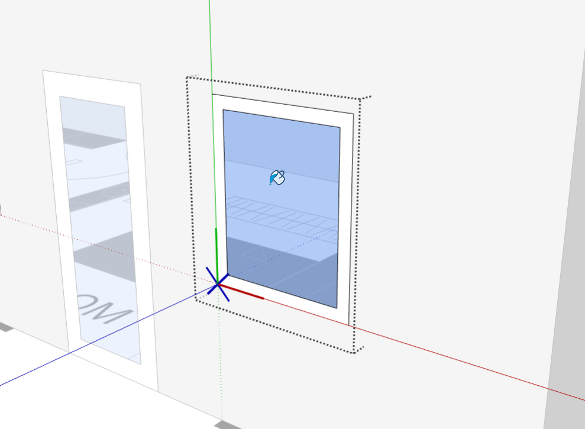
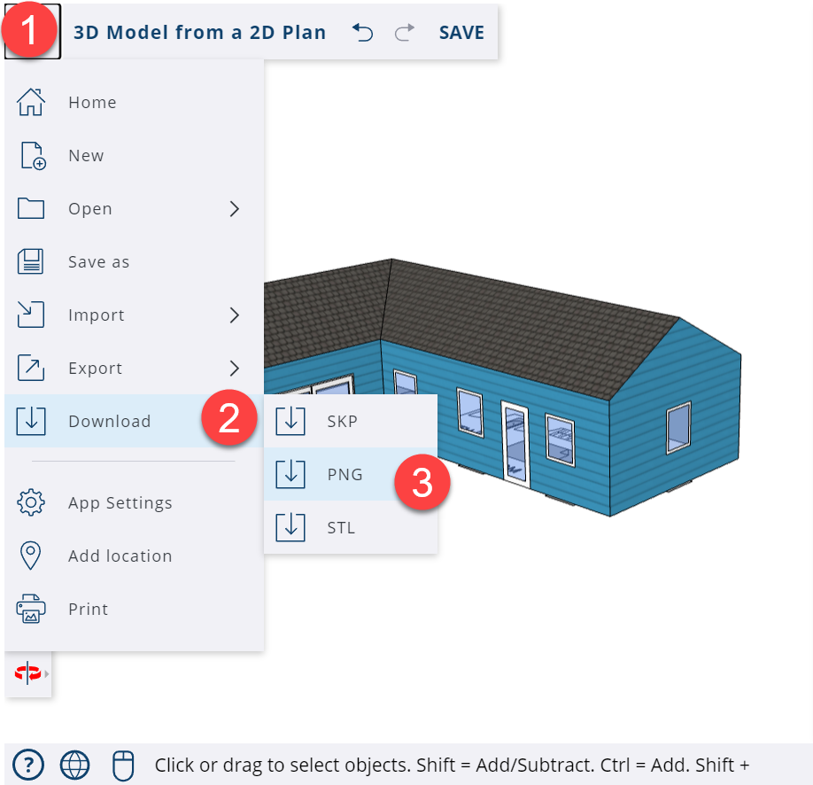

Outline
Overview
Learning Objectives
ISTE Standards for Educators
Intro to SketchUp for Schools
Design Your Dream Home
Part 2: Turning 2D Into 3D
Chapter 1: Group the 2D Floor Plan
Chapter 2: Create the Exterior Walls
Chapter 3: Place an Opening and a Door
Chapter 4: Create a New Door Component
Chapter 5: Create and copy the Windows
Chapter 6: Create the Roof
Chapter 7: Adding Material Finishes
Chapter 8: Add window details
Chapter 9: Making unique components
Chapter 10: Make some changes!
Chapter 11: Export and Present
Learning Objectives
In this lesson, students will learn how to use the following SketchUp tools:
At the completion of this lesson, students should feel comfortable with the following on their own:

| Using basic drawing tools to take a 2D design and push/pull it into 3D geometry. |
| Adding life to a base model using both Materials and the components in the 3D Warehouse. |
| Using tool tips and components to create identical linked geometry throughout a model. |
|
|
ISTE Standards for Educators
1 | Learner | Educators continually improve their practice by learning from and with others and exploring proven and promising practices that leverage technology to improve student learning. This lesson fulfills 1a |
2 | Leader | Educators seek out opportunities for leadership to support student empowerment and success and to improve teaching and learning. This lesson fulfills 2b, 2c |
4 | Collaborator | Educators dedicate time to collaborate with both colleagues and students to improve practice, discover and share resources and ideas, and solve problems. This lesson fulfills 4b |
5 | Designer | Educators design authentic, learner-driven activities and environments that recognize and accommodate learner variability. This lesson fulfills 5a, 5b |
6 | Facilitator | Educators facilitate learning with technology to support student achievement of the ISTE Standards for Students. This lesson fulfills 6a, 6b, 6c, 6d |
Intro to SketchUp for Schools
Before we get started, let’s go through some of the basics together.
Getting Access- Go to https://edu.sketchup.com/app
- Sign in with the Google or Microsoft email address provided by your school.
- Note: If you have trouble logging in, check with your administrator that your school or district has installed SketchUp for Schools (Instructions for Google & Microsoft Admins)
|
| TIP |
|
Save often! If you get into the habit of saving your work, you’ll be less likely to lose any progress if class ends and you close your laptop. |
Creating a New File- This is the SketchUp for Schools home screen. Here you can start a new project by clicking “Start Modeling” or “Create New”. Both will open SketchUp’s default template.
| 
|
Choosing a Template- Or you can choose a template in your preferred unit of measurement. For this lesson, we’ll be using Architectural - Feet & Inches. Choosing a template will start a new project as well.
|
|
Saving Files- Whenever you start a new model, it’s a good idea to save your file first. Click on the menu icon on the top left of the screen, then click “Save As.”
- Create a new folder by clicking on the New Folder Icon and give it a name.
- Give your model a name and then press “OK.”
- If you’ve done everything correctly, you’ll see your file name in the top left corner and a “Saved” message.
| 
|
The Scale Figure- Every time you open a new model in SketchUp for Schools, you will see Katherine Johnson’s scale figure. Katherine’s job is to give us a sense of the size of the objects we draw in our model.
- For example, Katherine is 5’5”. If we draw a 3-foot cube next to her, the cube will be about half her height.
|
|
Drawing a Cube- Select the Rectangle tool from the menu on the left.
- Click once on the ground near Katherine’s feet to set one corner of your cube.
- Without clicking again, move your mouse on the screen, type 3’, 3’ and press Enter.
- Select the Push/Pull tool from the menu on the left.
- Click once on the face you just drew. Without clicking again, move up to make a cube 3D.
- Type 3’ and press Enter to complete your cube.
| 
|
TIP |
|
Unless otherwise specified, a click in SketchUp is executed as “click and release.”
|
Navigation Tools- One of the most important things to learn in 3D modeling is how to move around in your model window.
- Click the orbit tool from the menu on the left to expand all the navigation tools.
| 
|
| Orbit
| The Orbit tool allows you to rotate around your model. Click on the Orbit tool, then left click-hold-drag your mouse from side to side in the model window. Mouse shortcut: hold down the scroll wheel to activate the Orbit tool, then move your mouse in any direction to orbit. |

| Pan | The Pan tool allows you to move your model across your screen. Click on the Pan tool, then left click-hold-drag your mouse from side to side in the model window. Mouse shortcut: hold down the scroll wheel, then hold down the shift key at the same time. Move your mouse in any direction to pan. |

| Zoom | The Zoom tool allows you to look closer at the details in your model. Click on the Zoom tool, then left click-hold-drag your mouse up and down in the model window. Mouse shortcut: use the scroll wheel to zoom in and out. |

| Zoom Window | The Zoom Window tool allows you to select an area of your model to view closer. Click on the Zoom Window tool, then left click-hold-drag your mouse to highlight an area of your model. |
| Zoom Extents | The Zoom Extents tool allows you to see all the geometry in your model. Click on the Zoom Extents tool and everything in your model will come into view. |
The Instructor PanelIf you want to see how a tool works, use the Instructor Panel.- You can open the Instructor Panel from the right side menu to find helpful tips on how to use any of SketchUp’s tools.
- The way it works: click on a tool with the Instructor panel open and you will see a description of the tool and a step-by-step guide on how to use it.
| 
|
Search for a toolAll of the drawing tools can be found in the toolset along the left side of the screen. However, you can always use the Search function to find a desired tool more quickly. This search function is also where you will find all of SketchUp’s default keyboard shortcuts, and where you can edit them or add your own.
| 
|
That’s it for the intro.
You’re ready to get started on modeling!
To follow along with the video for this lesson, click here.
Design Your Dream Home
Part 2: Turning 2D Into 3D
Checklist before you begin this lesson.

| You are logged in at edu.sketchup.com/app |
| You’ve gone through the SketchUp for Schools intro and feel comfortable navigating around in the model window. |
| You’ve created a new project in SketchUp for Schools and have saved it properly. |
|
Unit of measurement. |
| This lesson is drawn using the Imperial System for measurement. This is common practice in the United States and differs from the Metric System. Whereas the metric system uses meters (m) and millimeters (mm), the Imperial System uses feet (ft) and inches (in). Feet may also be represented by the ( ‘ ) symbol and inches by ( “ ). 1 meter = 3.28084 ft
This lesson template uses inches as the default unit, meaning that all manually typed units will be entered as inches unless otherwise indicated. When manually entering other units, use a ( ‘ ) symbol to indicate feet, or a (m) to indicate meters. |
The file used in this lesson. |
| This lesson will open using the training file created from Part 1 of this lesson series. If you would like to continue using your own model, once you have entered this lesson, navigate to the Main Menu (top left icon) , then click Open to find your file. Opening your model from within the training project will keep the video tutorial loaded and ready follow for you to follow along. |
| This is an image of the model created from Part 1 of this series. |
Chapter 1: Group the 2D Floor Plan
When transitioning from a 2D plan to a 3D model, grouping the existing 2D linework helps keep it separate from any of the 3D model elements being created. This ensures that the 2D plan is being used as a reference to trace or draw on top of.
Select the 2D Plan- With the Select tool, drag a window around the entire model. Zoom out if needed to make sure the entire model is selected.
Select all can also be done by pressing Ctrl + A [PC] or Cmd + A [Mac] |
|
Make a Group- With the cursor over an existing object (like the kitchen island), right-click and select Make Group.
|
|
Lock the Group- With the group selected from the previous action, click on Entity Info in the right side panel.
- Click on the Lock icon.
This locks the selected group and turns the selection red. Unlocked groups will highlight in blue by default. |
|
Chapter 2: Create the Exterior Walls
With the plan grouped, we can now trace over it in order to create the massing model of the exterior walls.
Set the view- Click on the Scenes icon in the right side panel.
- Notice the 9 angles or preset views of the model.
- Click on the icon in the bottom right corner to activate a side-angle view of the model.
| 
|
Trace the righthand rooms- With the Rectangle tool, draw a rectangle around the walls that make up the right side rooms of the house.
- Click at the corner where the bathroom starts and then click to the top right corner of the bedroom to the right.
| 
|
Trace the room on the left- With the Rectangle tool again, trace a rectangle around the outer edges of the living room/kitchen.
Start at the living room and move towards the foyer/entry.
|
|
Push/Pull the floor- Click on the Push/Pull tool.
- Hover the cursor over the left face and notice it highlighted with a dotted blue pattern.
- Click on the face, move the cursor up and then begin to type the desired height.
- Type 9’ and press enter for a 9ft tall box.
| 
|
Repeat Push/PullThe Push/Pull tool remembers the last height pushed by the user. - Hover the cursor over the face to the right of the previously pushed surface.
- Double-click to repeat the last Push/Pull distance so that the boxes are at the same height.
|
|
Chapter 3: Place an Opening and a Door
The building needs openings to allow sunlight and air in. In order to place certain types of components from the 3D Warehouse, it is important to create the opening first as a space for the component to go.
Create a sliding door- With the Rotated Rectangle tool, click first at the bottom left corner of the door opening as shown in the image to the right.
- Click again at the right corner, moving the cursor along the floor edge.
- Move the cursor up along the face to preview the height.
- Type 80 and press enter. This will draw an 80in tall rectangle.
| 
|
Delete the openingA simple way to create a rough opening for this exterior wall is to just erase the face. - With the Select tool, click on the rectangle that was just created.
- Press the delete key to remove the face.
Notice how you can see inside the model now. |
|
Select a component- Click on the Components panel to the right of the screen. (1)
- Click on the 3D Warehouse icon. (2)
- In the search field, type 8’ sliding door and press enter. (3)
|
|
Place a component- Click on the component “Sliding Glass Patio door 8’ ” by peterX.
- Move the cursor into the model and notice that the door is attached to it. Click to place the component in the opening that you created, using the bottom left corner as a reference.
|
|
Adjust the position- Activate the Zoom tool to look more closely at the component.
- Notice the doors are extruding out from the wall and not flush with the wall.
- Use the Select tool to pre-select the doors by clicking on them.
- Activate the Move tool and click the front, bottom left corner of the door.
- Move the cursor back so that the sliding door is in line with the wall and then click to set it in place.
| 
|
Chapter 4: Create a New Door Component
Finding components in the 3D Warehouse can offer a quick way to place detailed items in a model. However, in many cases, creating custom items is preferred. Let's learn how to create a door component that can align with vertical walls. We will then place it in another location within the model.
Get Closer to the area- Using the Zoom Window tool, zoom closer in on the area shown.
Being closer allows you to draw with more precision and accuracy.
|
|
Draw a rectangle- Activate the Rectangle tool.
- Click on the floor edge and move the cursor up and to the right.
- Type 36,80 and press enter.
|
|
Make a component- Activate the Select tool.
- Double-click on the rectangular surface to pre-select the door face and edges.
- Right-click and select Make Component.
|
|
Component Options- On the Make a Component screen, under the Definition field:
Name the component 36in Door. - Click the checkbox Cut opening.
This replaces the wall surface with whatever surface the door component is made up of. You now have a door component that can be placed in other locations within the model!
|  |
Now that the component is created you will be able to access it from the components panel and place copies of it throughout your model. Follow along in the next steps to find out how! |
|
Set your view- Using the Orbit, Zoom, and Pan tools, position the model to view the location as shown in the image to the right.
|
|
Toggle Back Edges- Using the Search tool in the left toolbar, search for Back Edges.
- Notice the View Back Edges item.
- Click the slider to enable.
This tool can also be activated using the K keyboard shortcut. |
|
Seeing through the model- With Back Edges activated, notice that it is easier to see inside the model and see where doors and windows are located from the interior of the model.
Back edges also makes it easier to place components in relation to objects on the floor plan. |
|
Place another door- Click on the Components panel on the right-side panel.
- Click on the Home icon if it is not already active.
- Click on the 36in Door component, move the cursor into the model and place it along the edge.
- Do not worry about placing it exactly on the existing 2D door symbol, we’ll make adjustments in the next step.
|
|
Move the door- With the door component still selected in the model, activate the Move tool and move the door over the 2D Plan symbol of the door.
| 
|
Edit a component- With the Select tool, double-click on the door to open and edit the component.
- Notice when editing a component that the rest of the model will fade, and a dotted boundary around the component will appear. This is a visual aid to let you know that you are editing the component and not simply drawing on top of it.
|
|
The Offset tool- Activate the Offset tool, located in the sub-menu of the Push/Pull tool.
|
|
- Hover over the face of the door until it highlights then click to activate the Offset tool.
- Move the cursor over the door face and you will see a new line offset from the frame of the door.
- Type in 6 and press enter.
- This creates a door outline with a 6-inch frame and a glass panel inside.
|
|
Notice components are identical- With the Select tool, click outside the dotted line area of the door component. This will close the component editing mode.
- Another way to close out is to press the Esc key with the Select tool active.
- Orbit around to the original door.
Notice it is identical to the door you previously modified. Any changes to one component affect all of them.
|
|
TIP |
|
Selecting to edit one component versus another doesn't matter. SketchUp will always treat them the same regardless of which one you are editing. If you want a component to no longer be linked, make it unique by right-clicking and selecting Make Unique. |
Chapter 5: Create and copy the Windows
Let’s further explore creating components and adjusting them to fit within the design of the building.
Turn off Back Edges- Click on the Search tool and type “back”. (1) (2)
- Next to View Back Edges, click on the toggle slider to turn off the visibility of back edges. (3)
This will make it easier to create the guides for the windows. |
|
Guides first- Zoom in closer to one of the windows. It doesn’t matter which one you start with since all the windows have the same dimension.
- With the Tape Measure tool, draw 2 vertical guides that represent the edges of the window. This can be traced and referenced from the 2D symbols on the floor plan.
- With the Tape Measure tool, click on the vertical edge, then move the cursor to place the guides at the left and right edges of the 2D window just below the wall.
|
|
Horizontal guidesDraw 2 horizontal guides representing the bottom and top of the window. - With the Tape Measure tool, click starting at the edge of the floor, move the cursor up and type 36 and press enter.
- Repeat this from the guide just created and move up 44 and press enter.
- This creates a window placement that is 44 inches tall and 36 inches off the ground.
|
|
Draw the rectangle- With the Rectangle tool, draw the window using the 4 guides as a reference.
|
|
Make a component- Before adding detail, make the rectangle a component in order to keep it isolated from the wall. This also allows you to copy it later.
- With the Select tool, double-click on the face of the rectangle, right-click and select Make Component.
|
|
Component settings- Give the component a name (36” window).
- Click Any to have it glue to any face.
- Check Cut opening to have the component cut through the wall surface.
- Press OK to finish creating the component.
|
|
Move and copy- With the Select tool, click on the window to pre-select it.
- Activate the Move tool, press Ctrl (PC) or Option (Mac) to enable the copy tool.
- Click starting from the bottom left corner of the window to begin the copy.
- Move the cursor to the right along the red axis. Hold down Shift to lock in the axes and then move the cursor down to infer or reference the edge of the 2D window in the floorplan.
This allows you to align the window with the 2D plan.
| 
|
Repeat the process- Make an additional copy using the previous technique of locking in the red axis while copying.
|
|
Delete guides- The guides for the windows are no longer needed and can be distracting.
- Click on the Display panel to the right. (1)
- Click on Delete all guides to remove all the guides in the model. (2)
|
|
Assist in placement- Zoom and position the model to view the wall with the single window on it to the right of the previously created windows.
- Using the Tape Measure tool, draw a guide 36” from the floor edge up in the vertical axis along the wall.
| 
|
Place a component- Click on the Components icon in the right side panel.
- Click on the 36” window component.
- You can hide the panel by clicking the arrow at the top right of the screen to make room in your model space.
- As you move the cursor into the model space, notice the window appears connected to your cursor.
- Hover over the left edge of the 2D window on the floor plan. Continue to hover and move the cursor up along the wall to infer the height.
- A dot at the reference and a dotted blue line will appear, letting you know that you’re aligned with the window edge.
- Once you reach the guide, click to set the window's position.
This takes practice! If you get stuck, try creating guides to assist in the placement. | 
|
Repeat the process- Place 2 additional window components around the building using the techniques in the previous step.
|
|
Repeat the process again- Orbiting around the building, continue to position the windows 36 inches off the floor of the 2D symbols.
- If inferencing from the floorplan is difficult, try using the Tape Measure to create guides to assist in placing the windows.
|
|
TIP |
|
Be patient when working with guides, placing components and inferencing. Take your time and zoom in as closely as possible so that SketchUp references the exact point you like. Mastering this step will make it much easier to model with precision as you advance your 3D modeling skills!
|
Chapter 6: Create the Roof
The Follow Me tool allows you to take a profile shape and extend it along a series of edges or a face. This tool will make it easier to create a roof pitch with the same slope on all sides of the building.
Get in position- With the navigation tools of zoom, pan, and orbit, get in a similar camera position as shown in the image to the right.
- If you still have any guides previously from creating the windows, delete them.
|
|
What is your pitch?Roofs have many different angles or pitches depending on their style, use, and climate. The angle can be expressed in degrees or as a ratio. - Activate the Protractor tool and click starting from the top corner of the wall. Make sure that the protractor is aligned along the red axis before you click to set this first point.
- Move the cursor along the horizontal edge and click.
- Lift the cursor up to begin showing the desired angle.
- Type 30 and press enter.
This draws a guide 30 degrees from the horizontal edge of the top of the wall.
| 
|
Create the line height- With the Line tool, staring at the midpoint of the horizontal roof edge, click to begin drawing the line.
- Move the cursor up along the blue axis until the pencil touches the guide.
- Click to finish drawing the vertical line.
|
|
Create the profile- Continue the line back to the corner.
- This will create a triangle representing the 30-degree angle pitch of the roof.
|
|
A bit of cleanup- The next step requires the ceiling to be one face.
- With the Select tool, click on the line that separates the 2 sections of the building and press delete.
|
|
Create the roof- With the Select tool, click on the ceiling to preselect it.
- Activate the Follow Me tool and then click on the profile shape (the triangle) representing the roof pitch.
SketchUp will now extrude the profile shape along the path or edges of the ceiling. This can also be done manually if the path is not preselected.
| 
|
Chapter 7: Adding Material Finishes
With the model taking shape, adding textures and materials is a fun way to give the model some character and style.
Add siding- Click on the Materials panel from the right side panel.
- Click on the Browse icon to the right of the Home icon to find other materials.
- Click on the Brick, Cladding and Siding dropdown.
- Place the cursor over the white siding texture and click to make it active.
- Now click on each wall surface to apply the material. Obit around and continue to click on the other walls.
| 
|
Add roofing- Repeat the previous steps of applying materials but with a roofing material instead.
- In the Materials tool panel, select Roofing.
- Click on the desired material.
- Finish by clicking on the roofing surfaces.
| 
|
Edit the component- Always apply materials inside a component. Otherwise, the texture does not get mapped correctly to the object.
- With the Select tool, double-click on one of the single doors in the model to open the component. The rest of the model will fade to the background, isolating the door to edit.
|
|
Apply transparency- With the Materials panel active, click on the Glass and Mirrors dropdown panel. This offers various materials that have transparency to see through and into the inside of the building.
- Click on the blue glass swatch and then click on the face of the door to give it a glass panel.
- With the Select tool active, press Escape or click outside of the component to close it.
Now when you orbit around your model, you should notice that each instance of the door component now has a glass panel in it. |
|
Chapter 8: Add window details
The windows need some character and material applied to them.
Enter the component- With the Select tool, double-click on a window in the model. The rest of the model will fade to the background, isolating the window to edit.
|
|
Add a frame- Zoom in closer to the window to make it easier to edit.
- With the Offset tool, click on the face and move the cursor inward.
- Type 3 and press enter. This creates a 3-inch frame around the window for the glass to sit inside.
| 
|
Add the glass- With the Paint Bucket active, click on the face of the window to apply a glass material.
|  |
If you use the same glass material as with the door, you do not need to search for it in the Materials panel again as the previously used material is always active. This makes it easier to apply to multiple faces. |
|
|
Chapter 9: Making unique components
The two windows in the living space could be extended down to be taller. However, when editing components, it is important to make them unique so they don’t change the configuration of all the other window components.
Zoom in closer- With the navigation tools, zoom in closer to the two windows located in the main living area of the model.
|
|
Make Unique- With the Select tool, click on the left window component, then hold down shift and click on the right window. This preselects the two components we want to make unique.
- Right-click and select Make Unique.
|
|
Edit the height- With the Select tool, double-click on the right window to enter the component.
- Drag a selection box around the bottom edges of the window to preselect the two horizontal edges.
- With the Move tool, click on the edge and move the cursor down along the wall.
- Type 16 and press enter. This will extend the window down 16 inches to make it taller. The left window will reflect the same change.
| 
|
Chapter 10: Make some changes!
Now that the building is taking shape let us refine the design and make a couple of changes to its architecture.
What’s a hip versus a hip roof?- Currently, the two short ends of the roof are hipped.
A hip roof is when the ends of the pitch are angled. A gable roof is when the shorter ends are vertical (parallel) with the wall. |
|
Change to a gable- To convert a hip into a gable, zoom in closer to the hip roof on the right.
- With the Move tool, click on the endpoint where the three edges meet.
- Move the cursor to the right along the red axis.
- Lock in the red axis by either holding shift down or by clicking the [right arrow] key on your keyboard.
Right=Red, Left=Green, Up=Blue - With the axis locked, hover the cursor over the wall below and click to use it as an inference and set the gable in place.
If you find that there are gaps in your roof, simply use the line tool to draw along the edges and create a new face to fill them in. | 
|
Change the other side to a gable- Repeat the process from the previous steps with the hip roof on the left of the model.
|
|
Clean up the edges- With the Eraser tool, delete the horizontal edges on the gable roof.
This will extend the siding texture along the vertical walls. If it does not and the entire face is deleted, then the previous step did not align with the vertical wall plan. Undo and try again.
|
|
Change the siding color- Click on the Materials tool panel on the right side of the screen
- Select the Cladding Siding Material and click the edit button.
- Scroll down and click on the grey swatch next to Colorize.
- Choose your desired color for the siding and then press Done.
| 
|
Any material can be colorized to change its appearance. Just make sure the material is applied first in the model and then edit it in the Materials tool panel. |
Chapter 11: Export and Present
Now it is time to show off your hard work! Let us export the model so we can share it.
First, we will hide the axes, so they do not export with our rendering.
Hide the Axes- Click on the Display tool panel on the right side of the screen.
- Next to Axes, click to uncheck the box, turning off their visibility.
The axes are no longer visible in the model. Check this box back on when you want to continue modeling.
|
|
Download the image.- Using the navigation tools, center your model and set the view that you would like to see in your exported image.
- Click on the Menu icon in the top left corner of the screen.
- Select Download, then PNG.
|  |
Export ImageOn this screen, you can still adjust your view or the image's resolution. Let’s keep the default settings for now. - Click Export as PNG and choose a name and location to save your image.
|
|
Congratulations! |
|
Thanks for following along with this SketchUp for Schools floor plan lesson. You can now play around with creating your own exterior models with custom material colors, doors, windows, and any roof type you can create! |
Bonus Step: Fill up the model |
Have fun with the model. Add some more textures, place components from the 3D Warehouse and make it your own. Add a pergola, shutters, window planters, outdoor seating…the options are unlimited!
|
|
Keep Going… |
|
This lesson is Part 2 in a 3 Part series: Design Your Dream Home. Move on to Lesson 3: Prep the Model to Print. In Part 3 you’ll get your home ready to print and then assemble it in real life! |